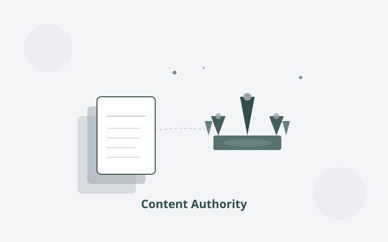

Insights
Perspectives on digital strategy, AI visibility, and what it actually takes for established businesses to compete online.

The Two Ways AI Can Know About Your Business, and Why Most Businesses Are Invisible in Both
Parametric vs non-parametric knowledge, explained for a business audience.

Content Is Cheap Now. So What Does "Authority" Actually Mean?
Producing more content is not the answer. Authority must be structurally demonstrated, not just claimed.